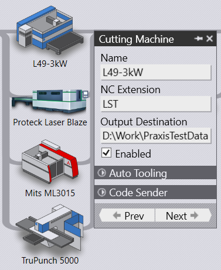
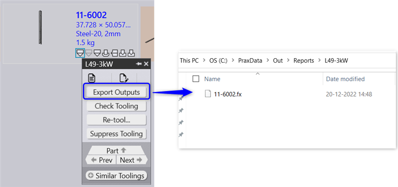
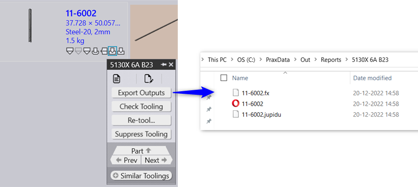
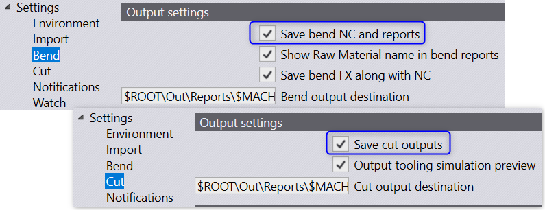
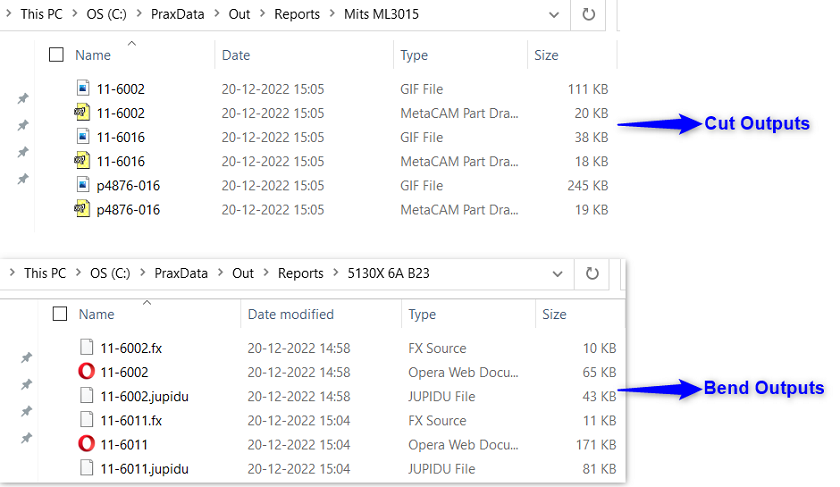
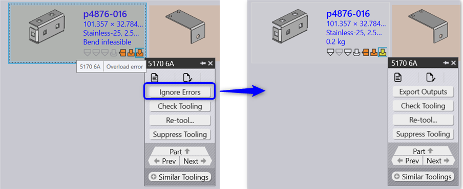

Set Output Destination field of a machine to assign a specific target output folder for that machine. If this field is not set, the output settings set via factory • settings • cut/bend is used as the target output location.

Tooling outputs and reports can be exported manually using the Export outputs panel command. This command can be used on a single part or multiple parts selected in a batch.


The tooling results are saved only if the tooling is in OK state and the export settings are enabled and configured in factory dialog.

The following output files are stored in the output location.

The Ignore Errors tooling panel command exports the outputs to the target output folder. The exported outputs are deleted from the target folders if the tooling is identified with errors.
For instance, in the below example the part is imported with an overload error. Upon clicking the Ignore error the part is tooled with warning.

The output is automatically saved to the destination